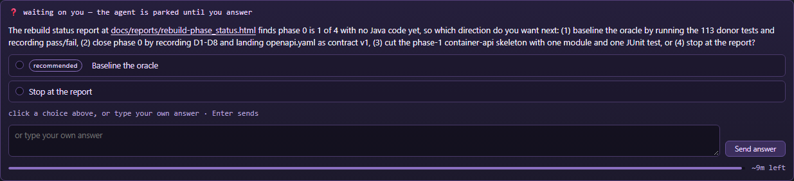

A clarify card's relative link now opens the file it names - and is plain text when the card has no tree
A worker card asked about docs/reports/rebuild-phase_status.html as bare relative text. The card drew it as a link, the reader pressed it, and the panel went looking in the project's checkout while the run that asked was one level down in a worktree of it. After the fix the same card, clicked in a real browser, opened the file with no banner.
Measured 2026-11-11, in .worktrees/fix-a-clarify-card-whose-file-link-is-a-dcebdf on
wtgui/fix-a-clarify-card-whose-file-link-is-a-dcebdf, cut from main at ce87716a
("docs: render the changelog - 547 releases", version 1.82.1). This branch claims 1.82.2.
The live panel is serving 1.81.8 (GET /api/diagnostics: version 1.81.8, pid 16900,
uptime 46,787 s at the measurement) - a build older than the base itself. Every check below was answered by the gate's own
panel, which is this tree's server.js at 1.82.2, started on a port of its own. The change touches
lib/, so the panel the reader is looking at will not show any of it until that process is restarted: nothing here
can be seen through http://127.0.0.1:7331 yet.
Step 0 - the reproduction, on a real card
The gate (tools/verify-clarify-card-base.mjs) starts a stub gateway, starts a real worker run through the panel's
own reply route with its cwd in a linked worktree of a sandbox project, and the worker raises a real
clarify.request whose question text carries the bare path. The panel then holds that question on a real job record
and the page draws the card from the store, exactly as a reader's page does.
The card drew an anchor. The click posted the path and nothing else, and the route resolved it against the project roots:
POST /api/open-file {"path":"docs/reports/rebuild-phase_status.html"}
HTTP 404 no such file: <scratch>/wtgui-base-oJL3qH/repos/demo/docs/reports/rebuild-phase_status.html
reader banner open docs/reports/rebuild-phase_status.html: no such file:
<scratch>/wtgui-base-oJL3qH/repos/demo/docs/reports/rebuild-phase_status.html
The file was in <scratch>/wtgui-base-oJL3qH/repos/demo/.worktrees/report-one/docs/reports/ - the tree the run
that asked the question was sitting in. The panel looked one level up, in the project's own checkout, because that is what
path.resolve() against its own cwd and a loop over project roots will always do. The gate answered 12/22 at that
point, and the two failures that matter are the two the reader feels: the anchor carried no base, and the click opened nothing.
Step 1 - the request carries the base that belongs to the question
Four pieces, one rule: a relative target belongs to the asking turn's tree, and only the card knows which tree that is.
| Where | What it does now |
|---|---|
lib/jobs.js | questionBaseFor(job) reads the run's own cwd (else the tree it was cut into) and writes it on the question record as base when the prompt arrives, slashed as the store keeps every path. null when the run is homeless. |
lib/open-url.js | resolveFileTarget(target, base): absolute is taken as given; relative is resolved against the base; relative with no base is an error, not a default. fileUrlFor, fileOpenerLadder and openFileWith take that base, so no path in this file reaches path.resolve against the panel's own cwd any more. |
server.js | POST /api/open-file resolves once through resolveFileTarget, refuses a relative path with no base (400, with the sentence), and the loop over "every open project" is gone. The boundary is unchanged: a file is opened only inside a project or the panel's own checkout (403 otherwise). |
public/app.js | questionBase(q) reads the record's base, the anchor carries it as data-open-file-base, and openQuestionFile(target, base) posts it beside the path. |
What the same click answers after the fix - the body is the one the page actually sent, read off the request:
POST /api/open-file {"path":"docs/reports/rebuild-phase_status.html",
"base":"<scratch>/wtgui-base-GGbIy1/repos/demo/.worktrees/report-one"}
HTTP 200 {"ok":true,
"path":".../repos/demo/.worktrees/report-one/docs/reports/rebuild-phase_status.html",
"opener":"msedge.exe","via":"default browser","progId":"MSEdgeHTM","fallback":0,
"url":"file:///.../report-one/docs/reports/rebuild-phase_status.html","bytes":80}
Step 2 - draw no anchor you cannot resolve
In public/core/dom-format.js, fileAnchor returns empty for a relative target with no base, so
plausiblePath + fileAnchor never emit data-open-file for something the card cannot resolve.
linkifyCardParts returns both the HTML and the list of targets it refused, and the card prints one line under the
question:
relative path, not a link: docs/reports/rebuild-phase_status.html - the card has no tree to resolve it against
The Links section applies the same rule to its own rows: a relative entry with no base keeps its label and its target and says
relative path, not a link instead of offering a press that would fail. An absolute path and a URL are untouched, anchor
for anchor. Two tests pin that and pass both before and after the change.
Step 3 - the worker brief asks for an absolute path
The Links paragraph in lib/jobs.js now says, in the worker's own brief:
... either a `url` or a `path` (an http(s) URL, or an ABSOLUTE path to a file in your tree - `.../docs/reports/thing.html`, not `docs/reports/thing.html`). A relative path cannot be opened: the card does not know which tree you mean, so it draws the path as plain text and says it is relative rather than opening the wrong file - write the absolute one, and the card opens it in the reader's browser.
Step 4 - every assertion red before its fix
The same test file, unchanged, run against the base commit (exported with git archive to a scratch folder, not a
worktree) and against this branch. 7 of 9 fail on the base; the two that pass on both are the "absolute path" and "URL"
cases, which must not change.
| Assertion | On the base | On this branch |
|---|---|---|
| the anchor names the tree it belongs to, so the click cannot resolve anywhere else | fails - no data-open-file-base | passes |
| a path with a space and a non-ASCII character keeps its name and its base | fails - no base attribute | passes |
| a relative target with no base stays plain text, and the card says why | fails - nothing clickable, no note | passes |
| a Links entry that is relative and has no base is not drawn as a link either | fails - an anchor is drawn | passes |
| the worker brief asks for an absolute path and says why a relative one cannot be opened | fails - the old brief said "absolute, or relative to the tree root" | passes |
| the route refuses a relative path with no base instead of guessing one | fails - 404 "looked for under every open project" | passes - 400 with the sentence |
| the route resolves a relative path against the base it was given, and says where it looked | fails - it looked in a project root | passes |
| a base cannot walk a file out of the projects | fails - win.ini under a foreign base answered 404, not the boundary | passes - 403 |
| an absolute path is unchanged, and carries no base | passes | passes |
| a URL is unchanged | passes | passes |
Green: env node --test test/clarify-relative-base.test.js - 10 tests, 10 pass. With the three existing
card tests beside it (clarify-question-links, clarify-question-link, open-url): 45 tests, 45 pass.
Step 5 - the real proof, in a real browser
tools/verify-clarify-card-base.mjs (also npm run verify:clarify-card-base) drives a real Chromium page,
finds the card by its row key, reads the anchor the page drew, clicks it, and reads the banner afterwards. 22 of 22 checks
pass. The ones that answer the reader's question:
| Check | Answer |
|---|---|
| the run's cwd is the worktree, not the checkout | the run sits in .worktrees/report-one |
| the question carries the asking turn's tree as its base | the worktree path, written by lib/jobs.js |
| the anchor's target is the path the worker wrote | docs/reports/rebuild-phase_status.html |
| the anchor carries the tree, so the click cannot resolve anywhere else | yes |
| the click posts the path AND the base the card carries | both, read off the request |
| the file it opened is the one in the asking turn's worktree | .../report-one/docs/reports/rebuild-phase_status.html |
| the answer names the launcher that started | default browser (MSEdgeHTM) |
| the file:/// URL went to that launcher | file:///.../report-one/docs/reports/rebuild-phase_status.html |
| the answer names the reader's registered browser | msedge.exe = Microsoft Edge |
| the reader saw no failure banner | none |
| a relative path with no base is a 400 that says so | "the card has to say which tree it is relative to" |
| a base that is wrong names the path it looked for there | 404 naming the resolved path and the base |
| a base outside every project cannot smuggle a file out | 403 on win.ini under a foreign base |
| an absolute path still opens without a base | 200 |
| a URL still goes to the OS opener | 200 |

Step 6 - what was run, what it answered, and what is red
| Command | Answer |
|---|---|
node tools/absolute-paths.mjs | clean - 1527 tracked files, 1378 paths in 254 allowlisted files, none new |
env node --test test/clarify-relative-base.test.js | 10 tests, 10 pass |
| the three existing card/open-url test files | 45 tests, 45 pass |
npm run verify:clarify-card-base | 22/22 checks |
npm run test:changed | 216 files, 1098.9 s, 1813 subtests pass, 13 distinct failures - 2 were mine (the absolute-paths allowlist, and my own test file caught mid-edit), both fixed after; 11 remain and none names a file this change touches |
npm test (the full suite) | not run - the focused set already covered 216 of 308 files, and the eleven reds are outside this change |
The eleven reds, named so they are not mistaken for this landing's:
windows-hide:lib/child-tree.js:74callsexecFilewithoutwindowsHide.harness:tools/verify-round-tree-names.mjssays LIVE GATE but nopackage.jsonscript runs it.paths: a*File / *Dir / *Logconfig key is not derived bylib/paths.js.assistant-profile: the whitelists are still in the profile.pipeline-bench(3 checks),header-controls(1),worktree-assistant(owner/wake),assistant-attachment-spawn(1).
The first three were re-run against the base export and fail there identically, which is the evidence that they arrived
with ce87716a and not with this branch. The other eight name files this change never opens.
The pull request
#706 on JLRoper/agent-worktree-gui: wtgui/fix-a-clarify-card-whose-file-link-is-a-dcebdf -> main, cut from ce87716a, version 1.82.2.
What a reader gets: a relative path in a question is a link only when the card can say which tree it belongs to, the click resolves against that tree, and a path the card cannot resolve is plain text with one sentence saying why. The worker is told to write the absolute path, and told why.
The panel must be restarted to serve this: it is running 1.81.8 from the main checkout, and a lib/
change is not picked up until the process is restarted.